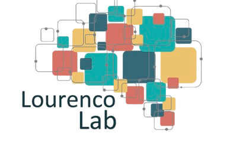
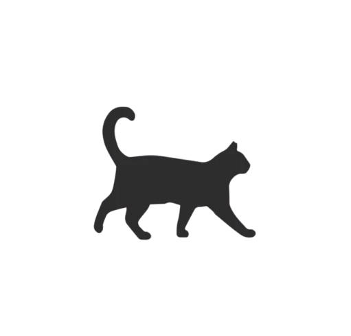

Happy Birthday, Stella!

Dear Stella, Wishing you a wonderful birthday and celebration! 🎉
I hope you enjoyed this small presentation for now - I know the 'real gift' should probably be finished manuscripts...I'll be working on them!
- Yaxin
